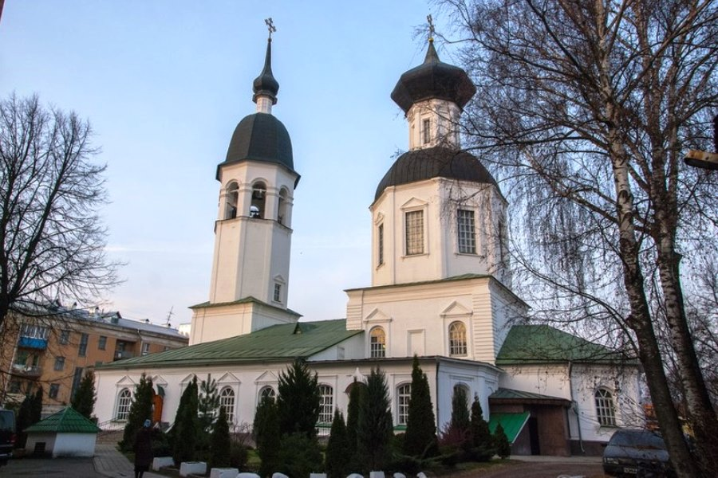
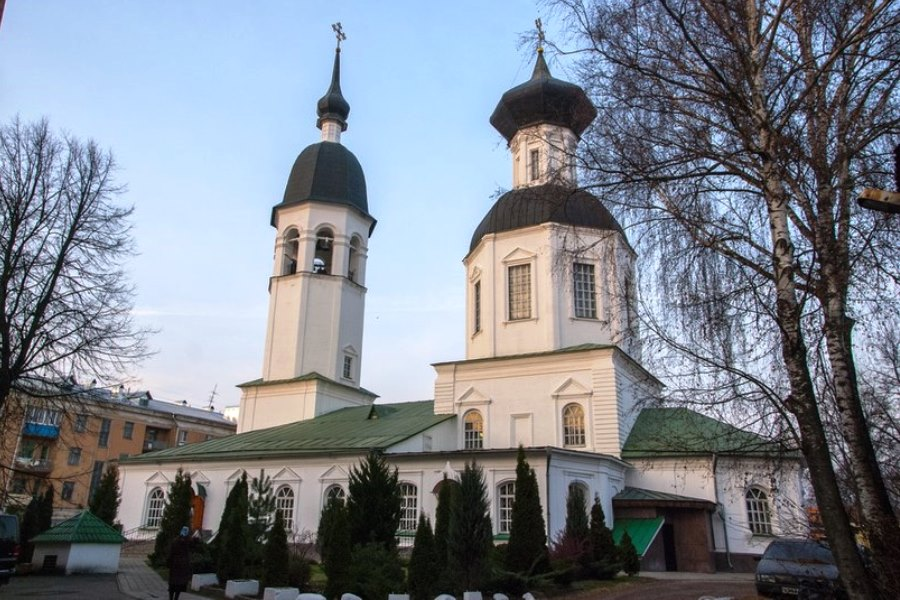

Великие Луки
Город Великие Луки расположен в 250 км к юго-востоку от Пскова, в пределах Ловатской низины, на берегах реки Ловать (бассейн озера Ильмень).
Вернуться
Город Великие Луки расположен в 250 км к юго-востоку от Пскова, в пределах Ловатской низины, на берегах реки Ловать (бассейн озера Ильмень).

 
